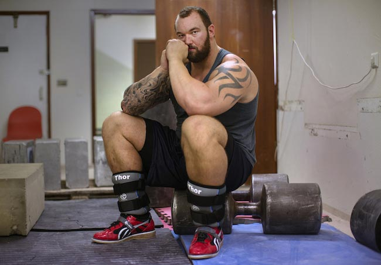

A majority of human life seems to resolve around maintenance. We spend an hour or two grocery shopping every week, an hour every day cooking and eating, countless hours commuting (conservative average is approximately 208 hours per year), and so on and so forth. Some of these activities are enjoyable: cooking and savoring a delicious filet mignon brings great satisfaction to some, while others would prefer to make a quick microwave dinner so they can get on with their lives. But why not try to optimize the time spent without sacrificing any of the pleasure?
This essay will examine (mostly through examples) multiple ways to optimize the time spent doing both maintenance and enjoyable activities. It is not meant to be an obsessive way to fill the day spent at 100% intensity and focus, but rather a way to make the unproductive times more productive and enjoyable. If you enjoy commuting in and of itself, don't let this convince you to change your ways. If you absolutely loath the necessary evil of commuting, then the ideas here may be for you. In regards to social activities, the ideas presented should not look at them as a "chore"—they are still meant to be enjoyable, but can be improved to become more beneficial for both parties.
Computers exist to do our bidding, making our lives exponentially easier as a result. One of the most impactful aspects is the level of automation computers and software provide. Events that are recurring, triggered, or one-time can be performed by the computer, taking the burden of remembering and performing off of the user.
So take a moment to think: are there things on my computer or in my life that I can easily automate? Here are two personal examples:
There are hundreds of other examples:
To make automation work for you, think about things that you do that 1) require the use of the computer, and 2) are boring, repetitive, and/or "maintenance"-like. If something comes to mind that fits those criteria, it can likely be automated.
Some activities can easily be combined with others at no additional cost or detriment and even benefit to the original activity. This r/slatestarcodex post makes a good case for the doubling-, or even tripling-, up of fundamentally distinct, but combinable, activities: eating + X + Y and exercise + X + Y.
Eating, as mentioned in the introduction, is relatively unproductive and serves no benefit besides nourishing the body. So, what else can you add to eating to improve productivity in the same time period?
Commuting is the bane of a lot of people's existence: studies have shown correlation between commuting and unhappiness levels. While minimizing commute time can only be solved by either moving closer to work or going in at lower-traffic times, there are ways to make the commute more productive.
While eating and commuting are required, some activities aren't, yet are easily combined with others for maximum benefit.
As discussed in the aforementioned r/slatestarcodex post, social and healthy activities can be combined. Take your favorite sport that you would normally do alone and invite a friend or group. Can you take it outside? Sunlight has been shown to have many benefits, especially in the body's production of vitamin D and serotonin.
Relaxing activities can also be combined with social activities. Playing video games is often seen as a typical wind-down-after-work hobby. Instead of playing by yourself, invite a few friends who you don't get to see in person. You get to relax and hang out with friends.
Most of these are based on socialization. [FINISH]
Some activities have required, built-in intermissions. Instead of spending the time waiting around for the break to be over, other, short activities can be done.
Take strength training. When training for strength gains, rest periods should be between 3-5 minutes. Assuming 3-5 sets per exercises and 3-5 exercises per session, the total resting time is:
\[t_{\text{rest}} = (3-5) \frac{\text{sets}}{\text{exercise}} \times (3-5) \frac{\text{min rest}}{\text{set}} \times (3-5) \frac{\text{exercise}}{\text{session}} = (27-125) \frac{\text{min rest}}{\text{session}}\]In total, 0.5-2 hours of just resting! While some things require more than 5 minutes of dedication at a time, plenty can be done in 3-5 minutes instead of browsing social media or just walking around: reading (books, articles), writing (essays like this), chores (cleaning, organizing), to-do items. Unrelated accessory exercises can even be performed, so long as they don't interfere with the current or future exercises: if you've already finished all lower body work, then lower body mobility exercises are great to do between sets of bench press or chin-ups and vice versa.
Scientific experiments may take a long time to do (I know of one researcher whose simulation took over one week to complete). Rather than wait for an experiment or process to complete, you can begin writing the paper the experiment is being performed for, design future experiments, read the literature you've been putting off for weeks, or even concurrently run unrelated experiments.
Applying this to your personal life is simple. Find activities that require small waiting periods and fill those waiting periods with things other than mindless scrolling or basic waiting.